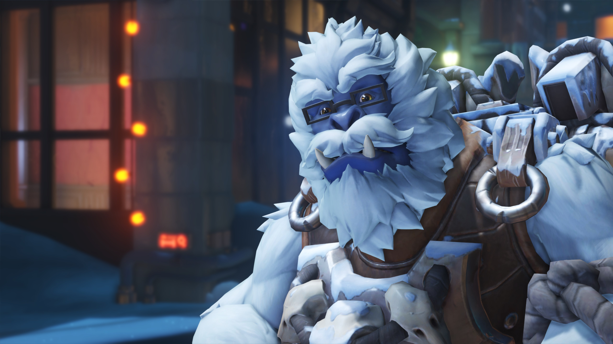
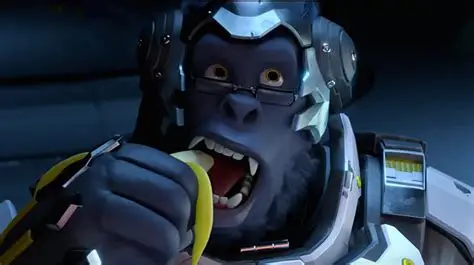

Winton is Our Hero
Winton has been protecting the world since May 24th, 2016. A shining light in a dark and scary world. Without him all hope would be lost. Winton has great strength and power in fact, he was able to defeat the Doom Fist in a one on one confrontation all while still looking cool. He is also incredibly intelligent, possesing an IQ above 140, while still being humble. the technology he has created has saved lives and this is why we should praise him for his astounding skills.
Why He's AWESOME
Winton represents strength, unity, and brawn. He has inspired many to fight for what is right and to strive to be the best they can (aka imitating Winton). He reunited a broken world despite being told its impossible. He defends the weak and powerless even using himself as a shield, he is the definition of a hero. Without him the omnic crisis could never have been stopped and the world would destroyed beyond recognition.

Why You Should Love Winton
Winton is a lover not a fighter. He wants everyone to get along and laugh. he loves silly jokes like “Anyone want to hear my favorite joke about the periodic table?” - Winton, truly promoting community and friendship Winton has also won our hearts in the OWCS (overwatch world championships) winning several with his teammates. He also saved Tracers life with his wonderful invetion the "Chronal Accelerator" which he made entirely by himself which just goes to show how intelligent he truly is. He is simply a kind benevolent being who wants the world to feel his love.
